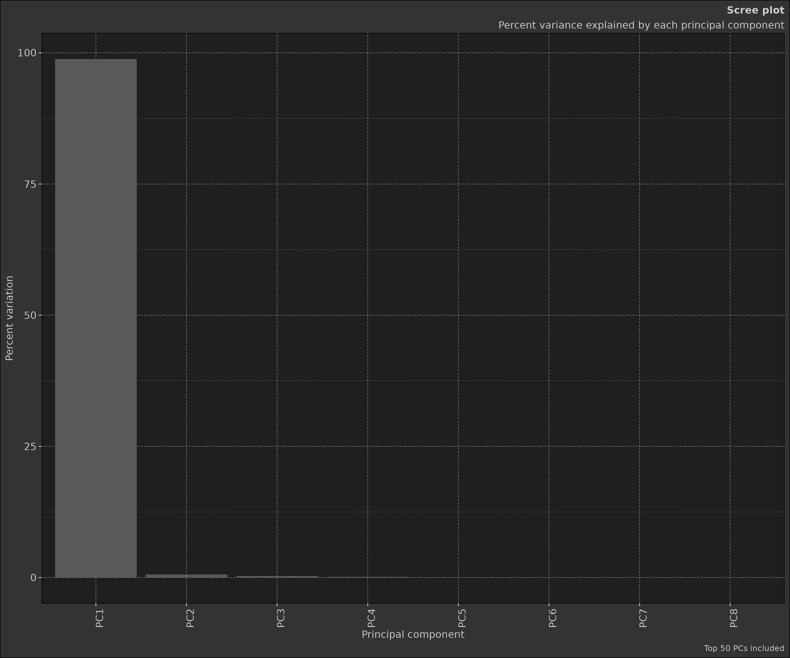
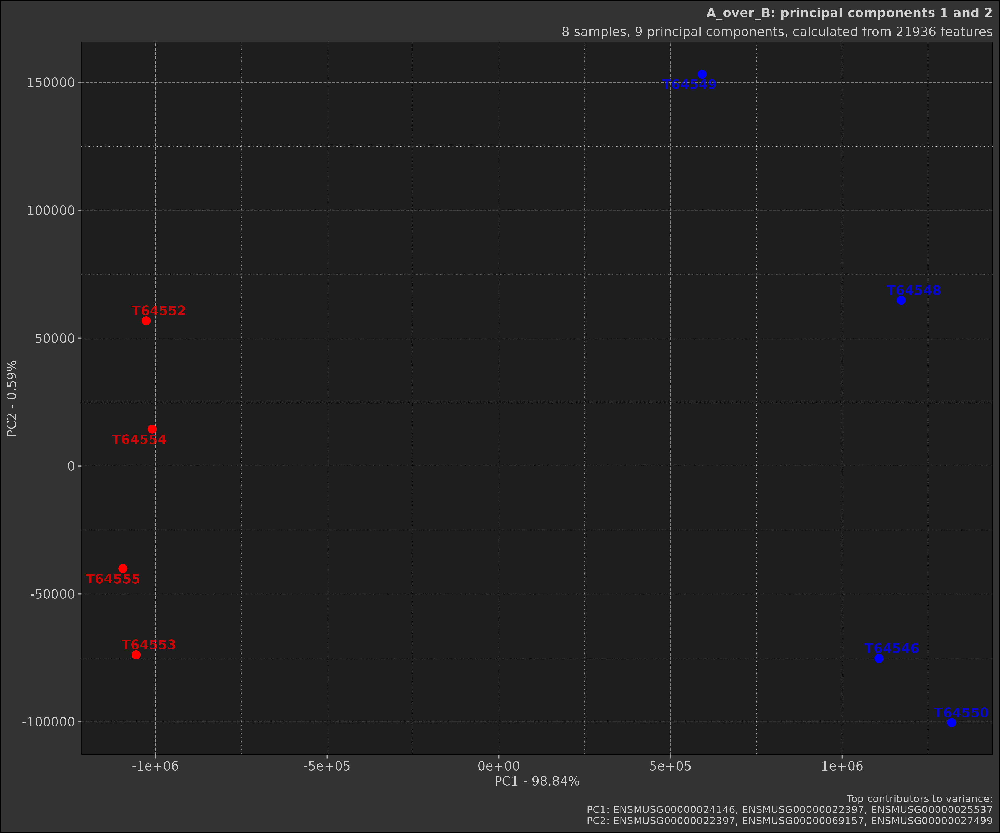

Review of Principal Component Analysis (PCA)
Source:vignettes/stat_review-principal-component-analysis.Rmd
stat_review-principal-component-analysis.RmdIntroduction
Principal Component Analysis (PCA) is a powerful dimensionality
reduction technique widely used in data analysis and visualisation. This
vignette provides a comprehensive guide to understanding PCA and using
the Pca class implemented from dmplot.
dmplot makes executing a relatively simple matter via
use of the Pca and Comparison (optional)
classes.
- Prepare your data: your high-dimensional data (HDD) should be in a data.table format with features as rows and samples as columns the first column must be named “feature” and contain the feature names.
- Create a
Comparisonobject (optional): if you have groups within your data that you want to compare, you can create aComparisonobject to represent these groups.- Using a comparison object will automatically filter your dataset to only include the samples in the comparison and create plots that highlight the differences between the groups.
- Create a
Pcaobject: pass your data and comparison object (if applicable) to thePcaclass to perform PCA.
Now just execute Pca$prcomp() to perform PCA on your
data and access plots via Pca$plot_scree() and
Pca$plot_scatter().
What is Principal Component Analysis?
PCA is a statistical procedure that transforms a set of observations of possibly correlated variables into a set of values of linearly uncorrelated variables called principal components. This transformation is defined in such a way that the first principal component has the largest possible variance, and each succeeding component has the highest variance possible under the constraint that it is orthogonal to the preceding components.
What does that mean? What is orthogonal to what?
We are accustomed to living in a three dimensional world but in this case we are using the word dimension simply as a way to describe a feature on which something was measured. For example, if we have a dataset with 1000 features (genes, financial indicators, etc.) and 100 samples (observations) then we have a 1000-dimensional dataset. PCA is a way to reduce this 1000-dimensional dataset to a 2-dimensional dataset (or 3-dimensional if you prefer) that captures the most important information in the data.
Now what does orthogonal mean? In this context, it means that the principal components are uncorrelated with each other. This is important because it allows us to capture the maximum amount of variance in the data with the fewest number of principal components.
The Mathematics Behind PCA
PCA involves several mathematical steps:
-
Standardisation: PCA begins with a dataset of n-dimensions. In our implementation, genes are dimensions and samples are observations. The data is standardised, transforming each dimension to have a mean of 0 and a standard deviation of 1. This step is crucial because PCA is sensitive to the relative scaling of the original variables.
Mathematically, for each feature x, we compute:
\[ x_standardised = (x - μ) / σ \]
where μ is the mean and σ is the standard deviation of the feature.
-
Covariance Matrix Computation: A covariance matrix is computed. This matrix indicates the covariance (shared variance) between each pair of dimensions. The covariance between different dimensions is used to understand the correlation structure of the original dimensions.
For a dataset X with m features, the covariance matrix C is computed as:
\[ C = (1 / (n-1)) * (X^T * X) \]
where n is the number of observations and X^T is the transpose of X.
-
Eigendecomposition: The covariance matrix is then decomposed into its eigenvectors and eigenvalues. Each eigenvector represents a principal component, which is a linear combination of the original dimensions. The associated eigenvalue represents the amount of variance explained by the principal component.
We solve the equation:
\[ C * v = λ * v \]
where v is an eigenvector and λ is the corresponding eigenvalue.
The eigenvectors are ordered by their corresponding eigenvalues, so the first principal component (PC1) explains the most variance, followed by PC2, and so on.
Selection of Principal Components: Depending on the goal of the analysis, some or all of the principal components can be selected for further analysis. The ‘elbow method’ is commonly used, where you plot the explained variance by each principal component and look for an ‘elbow’ in the plot as a cut-off point.
Interpretation: The ‘top rotations’ in the context of PCA refer to the features (genes) that contribute most to each principal component. The ‘rotation’ matrix gives the loadings of each feature onto each PC. By identifying features with large absolute loadings, we can understand what features drive the separation in the data along the principal components.
Using the Pca Class
The Pca class in dmplot provides methods
for each step of the PCA process, from data preparation to visualisation
of results. Here’s how to use it:
Creating a Pca Object
First, you need to create a Pca object with your
data:
# Load required packages
box::use(dmplot[Pca, Comparison])
data(feature_counts, package = "dmplot")
# The data should be a data.table with features as rows and samples as columns
# The first column must be named "feature" and contain the feature names
data <- feature_counts[GeneBiotype == "protein_coding", ]
colnames(data)[1] <- "feature"
# Create a Pca object
pca_obj <- Pca$new(data)In this case we perform a generic PCA object without any comparison. As you can see the plots do not show any groupings.
To execute the calculations use Pca$prcomp():
pca_obj$prcomp()
print(pca_obj)
#> PCA object:
#> -------------------------------
#> Proportion of Variance Explained by each PC:
#> PC pct_var_explained
#> <fctr> <num>
#> 1: PC1 93.51
#> 2: PC2 3.25
#> 3: PC3 0.78
#> ---
#> 70: PC70 0.00
#> 71: PC71 0.00
#> 72: PC72 0.00If you want to compare groups within your data, you can provide a
Comparison object. Providing a Comparison
object will automatically filter your data to only include the samples
in the comparison and create plots that highlight samples by group.
# Create a comparison table
comp_table <- data.frame(
group = c("A", "A", "A", "A", "B", "B", "B", "B"),
sample = c("T64552", "T64553", "T64554", "T64555", "T64546", "T64548", "T64549", "T64550")
)
# Create a Comparison object
comp <- Comparison$new(
comparison_name = "A_over_B",
group_order = c("B", "A"),
comparison_table = comp_table
)
# Create a Pca object with the comparison
pca_obj2 <- Pca$new(data, comp)
pca_obj2$prcomp()This method standardises the data, computes the covariance matrix, performs eigendecomposition, and stores the results.
Accessing PCA Results
You can access various aspects of the PCA results:
# View the raw PCA results
pca_obj2$prcomp_results
#> Standard deviations (1, .., p=8):
#> [1] 1.138674e+06 8.773857e+04 6.518402e+04 4.366182e+04 2.366213e+04
#> [6] 2.021359e+04 1.856779e+04 5.074559e-10
#>
#> Rotation (n x k) = (21936 x 9):
#> feature PC1 PC2 PC3
#> <char> <num> <num> <num>
#> 1: ENSMUSG00000051845 -7.096769e-06 -3.435085e-06 -1.311560e-05
#> 2: ENSMUSG00000025374 2.507594e-04 2.327624e-04 -2.263580e-03
#> 3: ENSMUSG00000025609 4.829978e-04 5.629973e-04 -1.712018e-04
#> ---
#> 21934: ENSMUSG00000063958 1.452822e-07 -1.861195e-06 -1.868383e-06
#> 21935: ENSMUSG00000096294 -3.440474e-07 -2.470131e-06 -1.668852e-06
#> 21936: ENSMUSG00000095261 -2.224891e-07 5.361425e-07 8.268138e-07
#> 5 variable(s) not shown: [PC4 <num>, PC5 <num>, PC6 <num>, PC7 <num>, PC8 <num>]
# View the refined PCA results
pca_obj2$prcomp_refined
#> PC pct_var_explained T64555 T64550 T64554
#> <fctr> <num> <num> <num> <num>
#> 1: PC1 98.84 -1.095036e+06 1.318588e+06 -1.009661e+06
#> 2: PC2 0.59 -4.006736e+04 -1.002931e+05 1.444540e+04
#> 3: PC3 0.32 2.585091e+04 -5.557073e+04 1.229583e+04
#> 4: PC4 0.15 -6.332709e+04 1.082834e+04 2.228724e+04
#> 5: PC5 0.04 -3.031154e+04 -1.626517e+04 3.658489e+04
#> 6: PC6 0.03 1.610595e+04 1.165766e+04 3.180771e+04
#> 7: PC7 0.03 1.252223e+04 -2.548565e+04 -7.162936e+03
#> 8: PC8 0.00 -7.304681e-10 1.467666e-10 -7.570011e-10
#> 5 variable(s) not shown: [T64546 <num>, T64548 <num>, T64553 <num>, T64549 <num>, T64552 <num>]
# View the top contributors to each PC
pca_obj2$top_rotations
#> $PC1
#> ENSMUSG00000024146 ENSMUSG00000022397 ENSMUSG00000025537
#> 0.9672892 0.1567412 0.1003282
#>
#> $PC2
#> ENSMUSG00000022397 ENSMUSG00000069157 ENSMUSG00000027499
#> 0.6915537 0.3600379 0.2865109
#>
#> $PC3
#> ENSMUSG00000027499 ENSMUSG00000022397 ENSMUSG00000052379
#> 0.5656072 0.4217036 0.2603293
#>
#> $PC4
#> ENSMUSG00000069157 ENSMUSG00000031071 ENSMUSG00000027499
#> 0.2599749 0.2594879 0.2519562
#>
#> $PC5
#> ENSMUSG00000035083 ENSMUSG00000052744 ENSMUSG00000026523
#> 0.3565922 0.2230975 0.1597955
#>
#> $PC6
#> ENSMUSG00000035083 ENSMUSG00000055212 ENSMUSG00000069157
#> 0.3526967 0.2379434 0.2237858
#>
#> $PC7
#> ENSMUSG00000025537 ENSMUSG00000003251 ENSMUSG00000026523
#> 0.3229935 0.2872070 0.2769927
#>
#> $PC8
#> ENSMUSG00000051845 ENSMUSG00000025916 ENSMUSG00000033093
#> 0.99589674 0.06659177 0.05689562Visualising PCA Results
The Pca class provides methods for creating two common
PCA visualisations.
The scree plot shows the proportion of variance explained by each principal component. This is useful for determining how many principal components to actually contribute to any possible differences between groups. As explained earlier the ‘elbow method’ is commonly used to determine the number of PCs to retain. This is a point of inflection in the scree plot where the explained variance starts to level off.
dmplot provides this plot as a histogram but one can
nonetheless use the calculated values to create a line plot.
pca_obj2$plot_scree()
The scatter plot shows the samples projected onto the first two principal components. This plot is useful for visualising the relationships between samples in the reduced-dimensional space.
pca_obj2$plot_scatter()
Earlier we made two different PCA objects, one with a comparison and
one without. As you can see the scatter plot with the comparison shows
the samples grouped by the comparison. Below is the plot without the
comparison; notice how the samples are not coloured by groups and there
are far more samples in the plot. This is because when a
Comparison object is provided, the data is filtered to only
include the samples in the comparison.
pca_obj$plot_scatter()Advanced Usage
Customising Plots
Both plot_scree() and plot_scatter()
methods accept various parameters for customisation. For example:
scatter_plot <- pca_obj$plot_scatter(
point_size = 4,
point_alpha = 0.8,
point_labels = list(show = TRUE, size = 3, alpha = 0.75, font_face = "bold", max_overlaps = 10),
top_contributors = list(show = TRUE, truncate = 20),
title = "My Custom PCA Plot"
)
print(scatter_plot)The plotting arguments are provided for ease of use but one can
nonetheless use the ggplot2 object to customise the plot
further.
box::use(ggplot2)
scatter_plot +
ggplot2$theme_minimal() +
ggplot2$theme(
plot.title = ggplot2$element_text(size = 16, face = "bold"),
axis.title = ggplot2$element_text(size = 14),
axis.text = ggplot2$element_text(size = 12)
)Interpreting Results
-
Variance Explained: Look at the
pct_var_explainedinpca_obj$prcomp_refinedto understand how much of the total variance each PC explains. - Sample Clustering: In the scatter plot, look for clusters of samples. Samples that cluster together are more similar to each other in the dimensions of the first two PCs.
-
Top Contributors: Examine
pca_obj$top_rotationsto understand which features contribute most to each PC. These features are driving the differences between your samples.
Best Practices
-
Data Preparation: Ensure your data is properly
normalised before performing PCA. The
Pcaclass expects the data to be in a specific format (features as rows, samples as columns). - Handling Missing Data: PCA cannot handle missing values. Ensure your data is complete or use appropriate methods to impute missing values before PCA.
- Interpreting Results: Remember that PCA is an unsupervised method. It doesn’t know about your experimental groups. If you see separation between groups in your PCA plot, it suggests that the largest sources of variation in your data correspond to your experimental conditions.
- Number of PCs: There’s no hard rule for how many PCs to retain. Common methods include looking for an ‘elbow’ in the scree plot, or retaining enough PCs to explain a certain percentage (e.g., 80%) of the total variance.
- Visualisation: While the first two PCs are commonly plotted, sometimes it’s informative to look at other PCs as well, especially if PC1 and PC2 don’t explain a large proportion of the variance.
Conclusion
The Pca class provides a powerful and flexible tool for
performing Principal Component Analysis in R. By encapsulating the
entire PCA workflow - from data preparation to results visualisation -
it simplifies the process of exploring high-dimensional data.
Whether you’re analysing gene expression data, financial time series,
or any other high-dimensional dataset, PCA can provide valuable insights
into the structure of your data. The Pca class makes it
easy to leverage this powerful technique in your analyses.